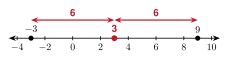
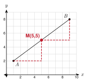
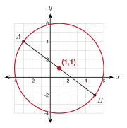

1. Find the average of 4 and 10.
(4 + 10) ÷ 2 = 7
2. Find the distance between (0, 0) and (6, 8).
36 + 64 = 10
3. Solve x + 52 = 4.
x + 5 = 8, so x = 3

−8 + (−2)2 = −102 = −5.
Check: the distance from −8 to −5 is 3, and from −5 to −2 is 3.
−7 + 42 = −32 = −1.5

From A(1, 2) to B(9, 8) you go 8 right and 6 up. Half of that is 4 right and 3 up. A plus that step is (1 + 4, 2 + 3) = (5, 5). The formula gives the same point: (1 + 92, 2 + 82) = (5, 5).
M = ( −2 + 62, 4 + (−2)2 ) = ( 42, 22 ) = (2, 1)
M = ( 1 + (−6)2, −5 + 22 ) = ( −52, −32 ) = (−2.5, −1.5)
(−7 + 32, 2 + (−6)2) = (−2, −2)
Amira finds the midpoint of (2, 6) and (8, 2). She writes (8 − 22, 6 − 22) = (3, 2).
She subtracted. The midpoint is an average, so add: (2 + 82, 6 + 22) = (5, 4). Check: (3, 2) is not even between the two points.
Way 1. From A to M: x goes 3 − (−1) = 4 and y goes 1 − 4 = −3. Take the same step from M: B = (3 + 4, 1 + (−3)) = (7, −2).
Way 2. −1 + x2 = 3 gives x = 7. 4 + y2 = 1 gives y = −2.
Both ways give B(7, −2).
4 + x2 = −2 gives x = −8. −1 + y2 = 5 gives y = 11. Q(−8, 11).
M = (2 + 102, 3 + 72) = (6, 5).
The distance between their homes is 82 + 42 = 80. Each walks half: 802 = 20 = 25 ≈ 4.5 miles.

Center: (−3 + 52, 4 + (−2)2) = (1, 1).
Diameter: 82 + 62 = 10. Radius: 10 ÷ 2 = 5.
Part 1. AM = 32 + 42 = 5 and MB = 32 + 42 = 5. The slope of AM is 43 and the slope of MB is 43, so the three points are on one line.
Because AM = MB and the points are collinear, M is the midpoint.
Part 2. AN = 32 + 42 = 5 and NB = 32 + 42 = 5. The distances are equal, but N is not on the line through A and B. So N is not the midpoint. Equal distances alone are not enough.
(−5 + 72, 2 + (−6)2) = (1, −2)
1. The midpoint is the average of the coordinates. Add them, then divide by 2.
2. The center of a circle is the midpoint of a diameter.
3. To find a missing endpoint, take the same step from the midpoint again.
4. A midpoint needs equal distances and collinear points.
1. 2 and 10
6
2. −12 and −4
−8
3. −5 and 2
−1.5
4. −1.5 and 6.5
2.5
5. (0, 0) and (8, 6)
(4, 3)
6. (−4, 7) and (6, 1)
(1, 4)
7. (3, −5) and (−9, −1)
(−3, −3)
8. (−2, −6) and (5, 4)
(1.5, −1)
9. (0.5, 2) and (3.5, −4)
(2, −1)
10. (1, 1) and (2, 2)
(1.5, 1.5)
11. M(2, 3) is the midpoint of AB. A is (5, −1). Find B.
B(−1, 7)
12. M(−1, −4) is the midpoint of CD. C is (0, 2). Find D.
D(−2, −10)
13. M(4, 0) is the midpoint of EF. F is (−3, 6). Find E.
E(11, −6)
14. Diego lives at (−4, 3) and Esperanza lives at (8, −1). Each unit is 1 mile. Where is the point halfway between them? How far does each person walk to get there? Round to the nearest tenth.
M(2, 1). Each walks 1602 = 40 ≈ 6.3 miles.
15. A round pond has a diameter with ends at (−6, 1) and (4, −9). Find the center. Then find the radius, rounded to the nearest tenth.
Center (−1, −4). Diameter 100 + 100 = 102, radius 52 ≈ 7.1.
16. Is N(2, 5) the midpoint of P(−1, 1) and Q(5, 9)? Use the formula.
(−1 + 52, 1 + 92) = (2, 4). No, N is not the midpoint.
17. A(0, 0), B(10, 0), and M(5, 12). Joseph says M is the midpoint of AB because AM = MB = 13. Is he right? Explain.
No. AM = MB, but M is not on the line through A and B. The midpoint is (5, 0).
18. Hnin finds the midpoint of (−4, 2) and (6, 8). She writes (6 − 42, 8 − 22) = (1, 3). Find her mistake. What is the correct midpoint?
She subtracted for the y-coordinate. 8 − 2 is not the sum of the y's. Add each pair: (−4 + 62, 2 + 82) = (1, 5).
19. The endpoints of segment AB are A(−6, 4) and B(2, −8). What are the coordinates of the midpoint of segment AB?
A. (−2, −2) ← correct
B. (−4, −6)
C. (4, −6)
D. (−8, 12)
20. Point M(1, −3) is the midpoint of segment PQ. Point P has coordinates (−5, 2). What are the coordinates of point Q?
A. (−2, −0.5)
B. (7, −8) ← correct
C. (−11, 7)
D. (−4, −1)
21. Triangle ABC has A(0, 0), B(8, 2), and C(2, 6). Find the midpoint D of AB and the midpoint E of BC. Show that DE is half as long as AC.
D(4, 1) and E(5, 4). DE = 1 + 9 = 10. AC = 4 + 36 = 210. So DE is half of AC.